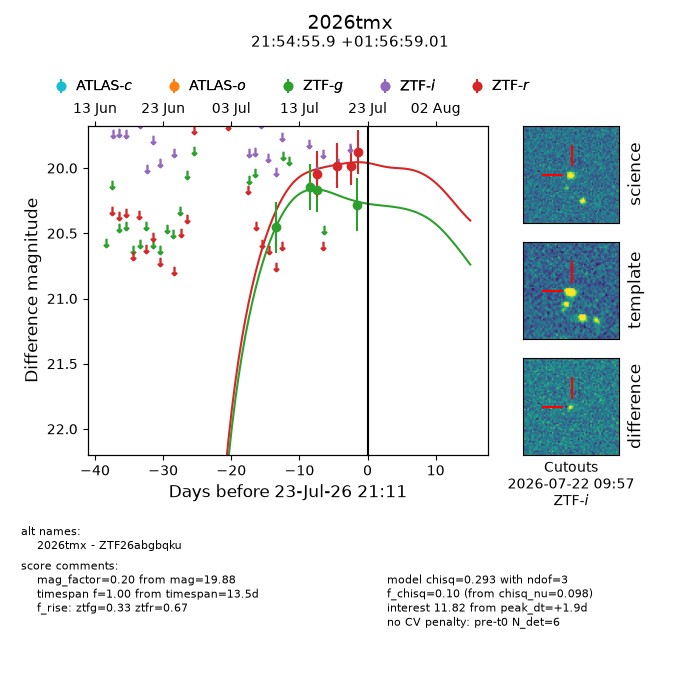
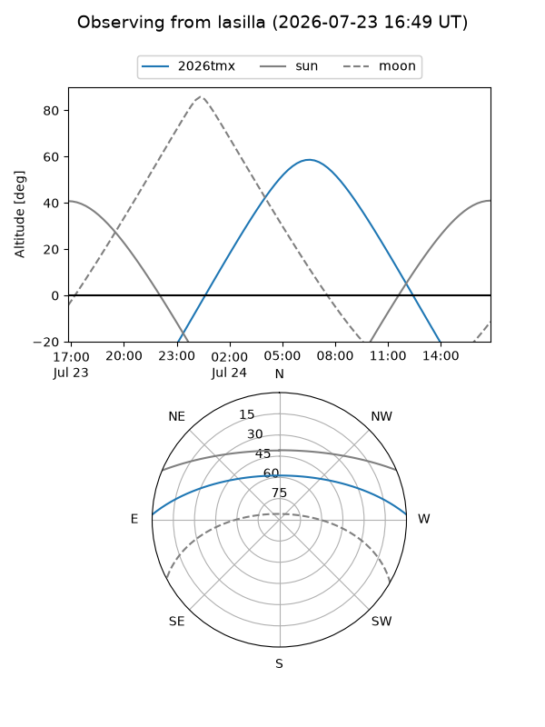
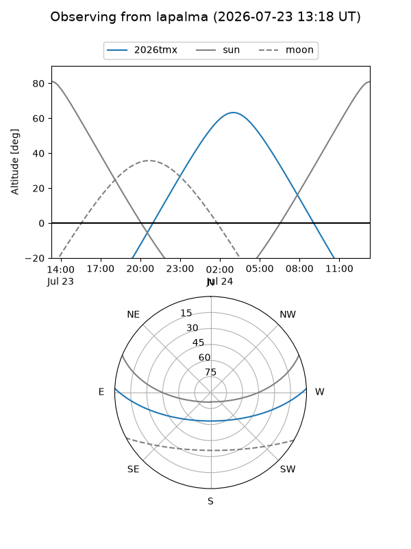
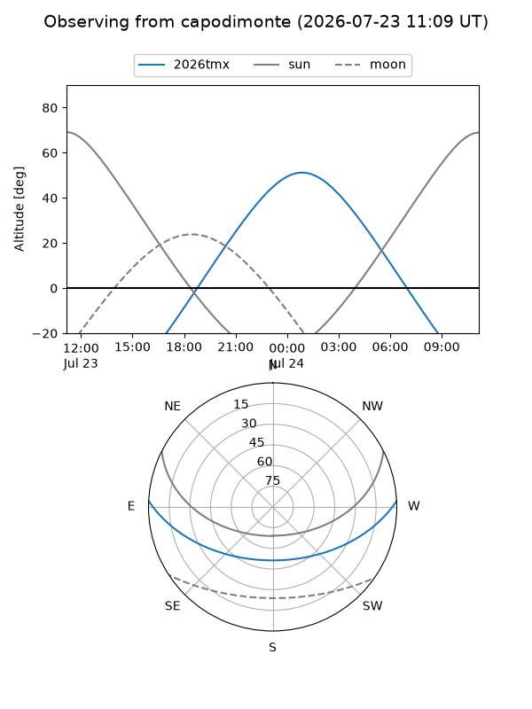
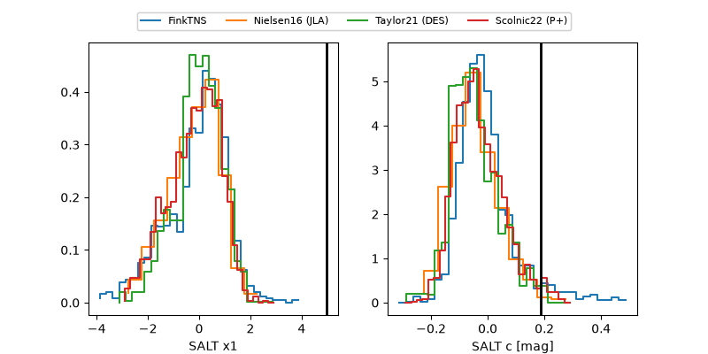

2026tmx
Target 2026tmx at 2026-07-23 21:14
Aliases and brokers:
FINK-ZTF: ztf.fink-portal.org/ZTF26abgbqku
Lasair-ZTF: lasair-ztf.lsst.ac.uk/objects/ZTF26abgbqku
ALeRCE-ZTF: alerce.online/object/ZTF26abgbqku
YSE-PZ: ziggy.ucolick.org/yse/transient_detail/2026tmx
TNS name: wis-tns.org/object/2026tmx
Direct TNS query: direct search
alt names
ZTF26abgbqku (ztf,fink_ztf)
2026tmx (tns,yse)
Coordinates:
equatorial (ra, dec) = 328.7329,+1.94972
equatorial (HMS+DMS) = 21:54:55.91,+01:56:59.01
galactic (l, b) = (60.1178,-38.53213)
Flags:
TNS type: nan
peak dt: +1.9
Photometry:
last ztfg=20.28, ztfr=19.88
4 ztfg, 4 ztfr detections
Lightcurve

Visibility



Additional plots
